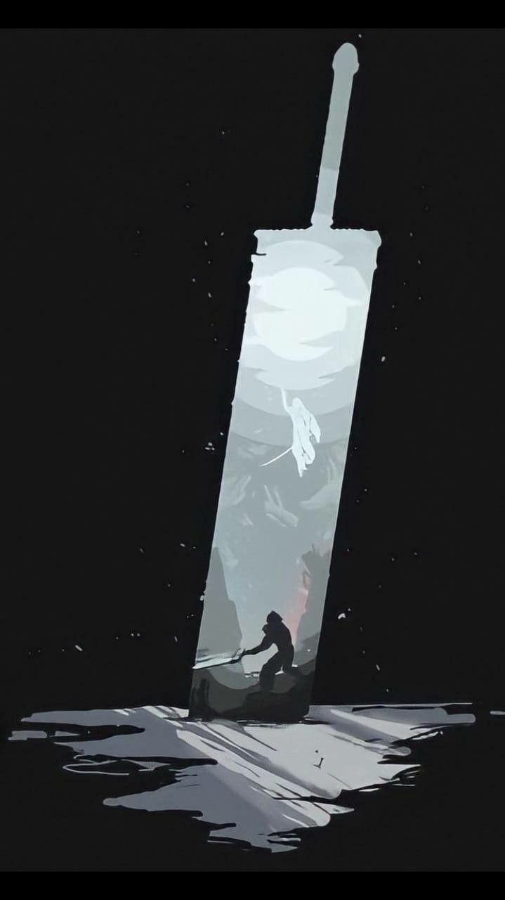
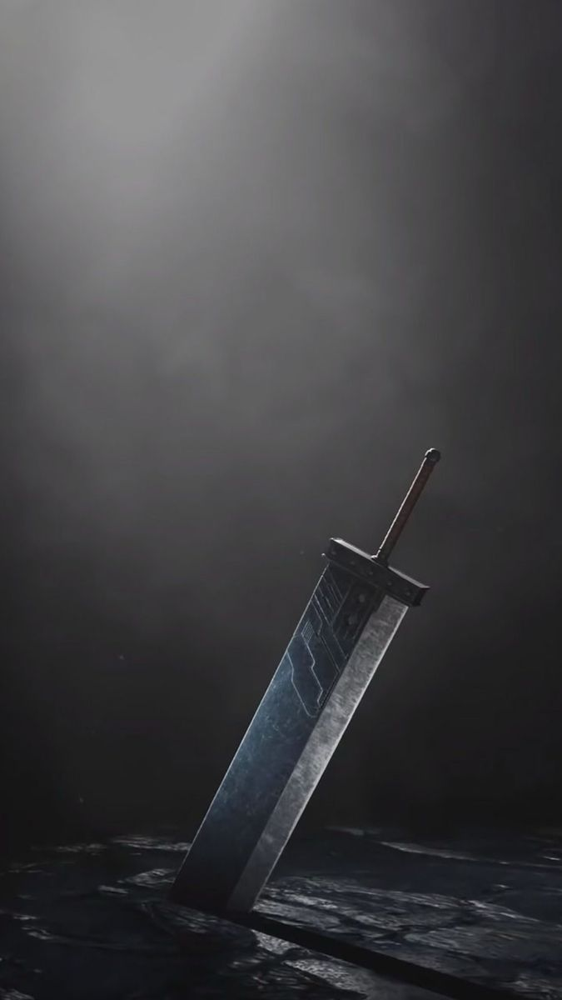
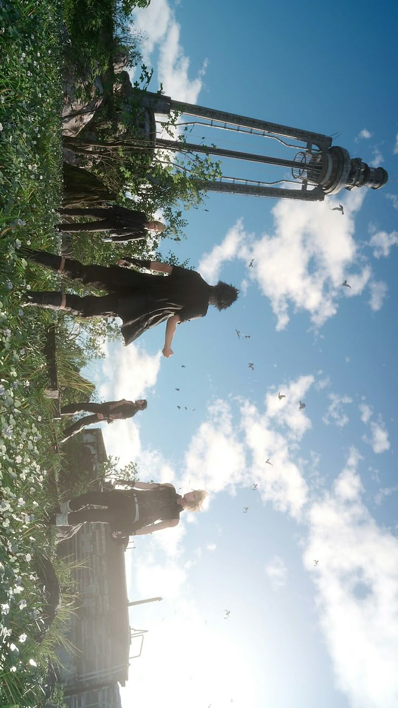

Sipnosis
Final Fantasy es una aclamada serie de juegos de rol (RPG) donde grupos de jóvenes héroes luchan contra males supremos para salvar mundos fantásticos. Aunque cada entrega numerada suele ser independiente, la saga destaca por sus Cristales, magia, exploración, aeronaves y criaturas icónicas como los Chocobos.


